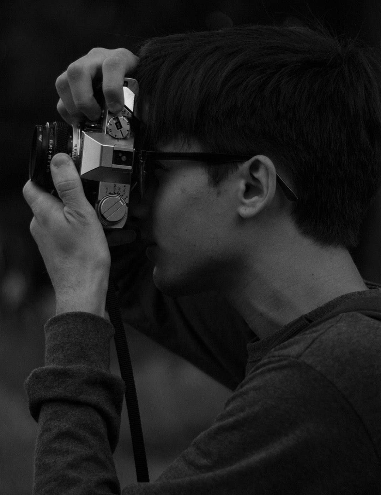
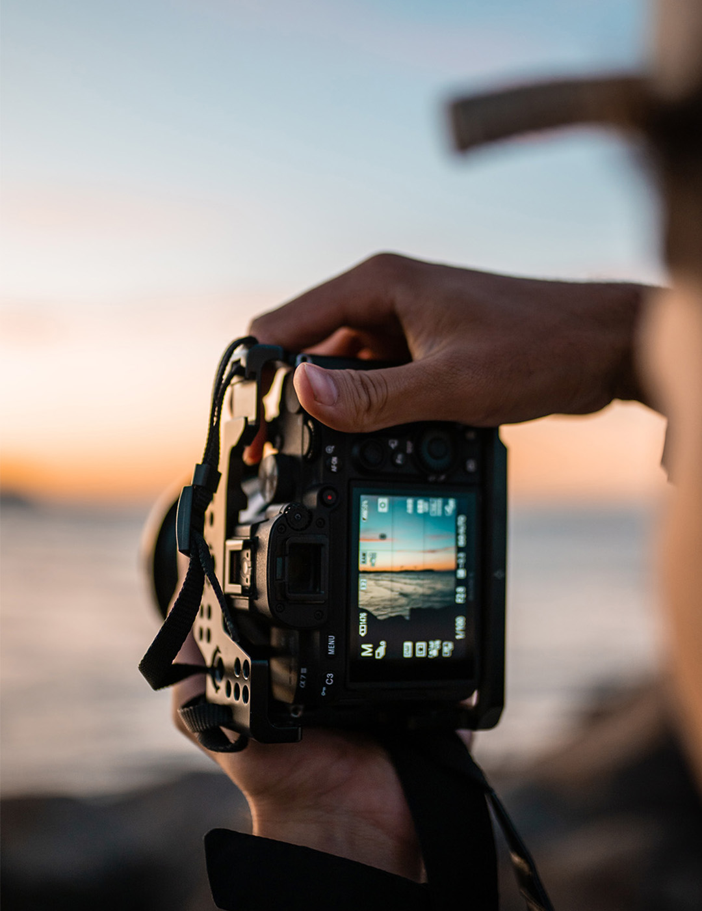

Lovass Attila vagyok, Budapesten születtem és járok iskolába, jelenleg a Budapesti Műszaki és Gazdaságtudományi Egyetemen Gépészmérnöki szakán tanulok.
Mivel Budapest mellet lakok, ezért minden reggel autóval jártam kis koromban iskolába és ekkor kezdtem érdeklődni az autók iránt komolyabban.
Emellett apukám is sokat mesélt a különböző autókról. A gépjárművek mellet a fotózás volt a másik dolog, ami megfogott és ezt a kettőt kombinálva kezdtem el fotózni különböző kocsikat. A fotózásról magamtól tanultam nem jártam iskolába, ezért ez csak egy hobbinak hívom, amibe lelkes vagyok. Ezen az oldalon a fotóimat lehet megtalálni, amiket én készítettem.
